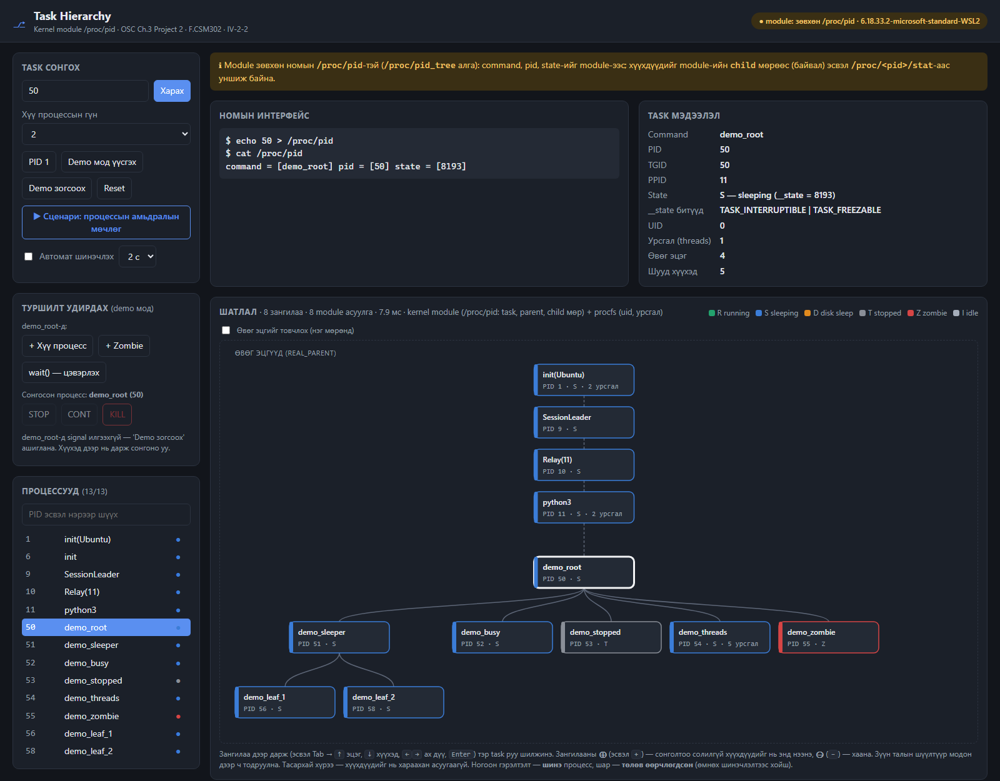
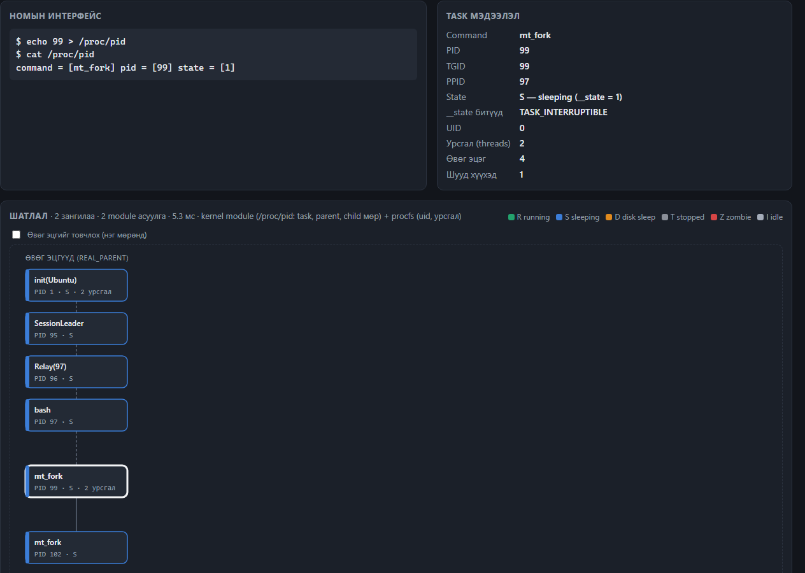
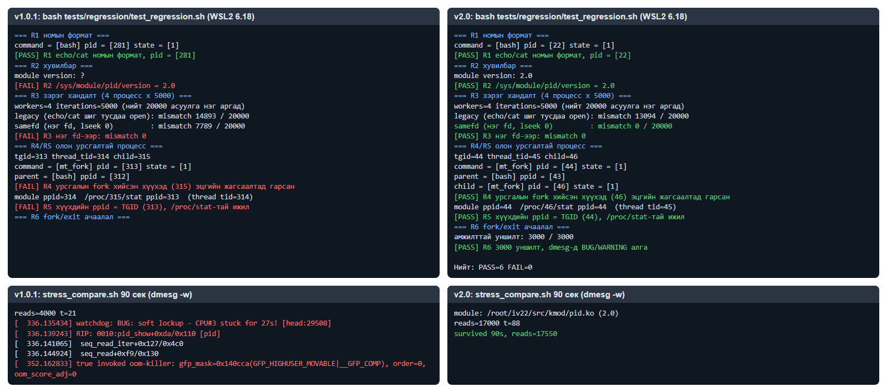

МЭДЭЭЛЭЛ, ХОЛБООНЫ
ТЕХНОЛОГИЙН СУРГУУЛЬ
LINUX KERNEL MODULE FOR TASK INFORMATION
OSC 3-р бүлэг, Programming Project 2 · UI дүрслэл: Task hierarchy · F.CSM302 Үйлдлийн систем · Бие даалт 2 · IV-2-2
Гүйцэтгэсэн: Б.Төгөлдөр /B242270047/ · С.Пүрэвтулга /B241940099/ · Л.Пүрэв-очир /B232270108/ · Б.Билгүүн /B190910014/ · Л.Тэмүүлэн /B210930842/ · Ч.Алтангэрэл /B231910003/
Удирдагч: Г.Ганбат /F.CS10/, Үйлдлийн систем, ШУТИС-МХТС
СИСТЕМИЙН ТАНИЛЦУУЛГА
Асуудал
Энгийн программ kernel-ийн санах ойд байгаа процессын бүтцийг шууд уншиж чадахгүй. Процессын мод fork, exit бүрт өөрчлөгддөг тул kernel доторх жагсаалтыг уншихдаа зөв түгжээ хэрэглэх ёстой. Олон хэрэглэгч зэрэг ашиглахад хариу холилдох эрсдэлтэй.
Шийдэл
БраузерSVG мод, төлөвийн өнгө, түүх
server.pyJSON API, нэг fd-ээр бичих, унших
/proc/pid · pid.kofd бүрт pid_ctx, номын формат
task_structRCU: for_each_process, real_parent
Эхний мөр нь номын яг формат, дараагийн мөрүүд нь parent, child. UI module-ийн гаралтаас модыг зурна.
$ echo 99 > /proc/pid; cat /proc/pid
command = [mt_fork] pid = [99] state = [1]
parent = [bash] ppid = [97]
child = [mt_fork] pid = [102] state = [1]
ДҮГНЭЛТ
Номын шаардлага, интерфейс (echo, cat, гаралтын формат) хэвээр бөгөөд БД1-ийн бүх тест давсан. Self-review-ийн 3 Major асуудал v1 дээр тестээр илэрч, v2 дээр засагдсан. Хамгийн ноцтой нь fork/exit ачааллын үед kernel-ийг гацаадаг RCU-ийн алдаа байсан. Хязгаарлалт: хүүхэд хайх нь O(N), kernel 5.14-өөс шинэ хувилбар шаардлагатай.
Туршилт ба дүрслэл
- PID сонгох эсвэл жагсаалтаас хайх; гүн 0-6
- Demo мод: S, R, T, Z төлөвтэй, 5 урсгалтай процессууд
- STOP, CONT, TERM, zombie, wait товч: мод, өнгө шууд шинэчлэгдэнэ
__state-ийг битийн нэрээр тайлна (8193 = INTERRUPTIBLE | FREEZABLE)- Module дуудлагын лог: бичих, унших бүрийн байт, хугацаа
Шүүмжийн мөрөөр сайжруулсан
- RCU: v1 ачааллын үед kernel-ийг гацаадаг байсан; хүүхдийг RCU-ээр хамгаалагдсан процессын жагсаалтаас олдог болсон
- Олон урсгал: аль ч урсгалын хүүхэд гарна, ppid = TGID
- Зэрэг хандалт: нээлт бүр өөрийн PID-тэй
- UI: PID 0 татгалзана, өвөг эцэг module-ээс
ҮР ДҮН
21 с → 90 с+fork/exit ачаалал: v1 гацаж унасан, v2 17 550 уншилт алдаагүй
7 789 → 0зэрэг хандалтын зөрүү (20 000 асуулга, нэг fd)
56 PASS, 0 FAILавтомат тест v2 дээр (4+7+6+27+12)
0.3 с400 зангилаатай мод зурах хугацаа
| Тест | v1.0.1 | v2.0 |
|---|
| Урсгалын fork хийсэн хүүхэд | алга | гарсан |
| Хүүхдийн ppid | TID 314 | TGID = ps |
| Нэг уншилт, 1025 процесс | 5 мкс | 47–56 мкс |
Ажиллагаа

Зураг 1. Demo мод: S, T, Z төлөв, 5 урсгалтай процесс; __state 8193 нь INTERRUPTIBLE | FREEZABLE гэж тайлагдсан, өвөг эцэг module-ээс.

Зураг 2. 2 урсгалтай процесс: үндсэн бус урсгалын fork хийсэн хүүхэд (PID 102) гарсан. v1 дээр хүүхэдгүй харагддаг байсан.

Зураг 3. Ижил скрипт: v1.0.1 (зүүн) R3-R5 FAIL, ачаалалд soft lockup; v2.0 (баруун) 6/6 PASS.